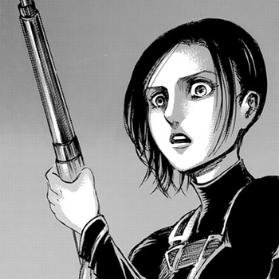

Sasha Braus
サシャ・ブラウス

"Potato Girl" (芋女 Imo on'na)
Information:
- Sasha Braus (サシャ・ブラウス Sasha Burausu) was a member of the Survey Corps and one of the few former members of the 104th Training Corps, of which she was ranked 9th best, that decided to join the regiment, upon coming into contact with Eren's strong desire to eliminate the Titans. A compulsive food hoarder with an overly polite way of speech, Sasha was from Dauper, a village in the southern territory of Wall Rose.
Trivia:
- Hajime Isayama named Sasha after comedic actor Sacha Baron Cohen to reflect the fact that he intended for her to provide a comedic element to the series.
- Sasha's name is short for "Alexandra," which comes from the Greek "Alexandros," meaning "defender of humankind." "Blouse" (Brauss) comes from the German saying "in Sauß und Brauss leben," meaning "to live off the fat of the land," a phrase she herself quotes.
Ability:
- Sasha showed high level skills in archery, horseback riding, and tracking. Sasha was ranked one of the top 10 trainees in her squad, implying good physical abilities.
- She was also commented to have a better sense of balance than some of the other trainees. Sasha's hearing was also very acute, to the point that she could detect an approaching group of Titans before many of her fellow trainees.
- Sasha had good knowledge of wild animals and utilizing her hunter experience.
"It's Alright If You're Weak, There Are People Who Will Come And Rescue You."
-Sasha Braus